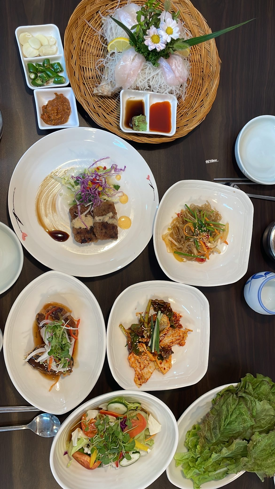
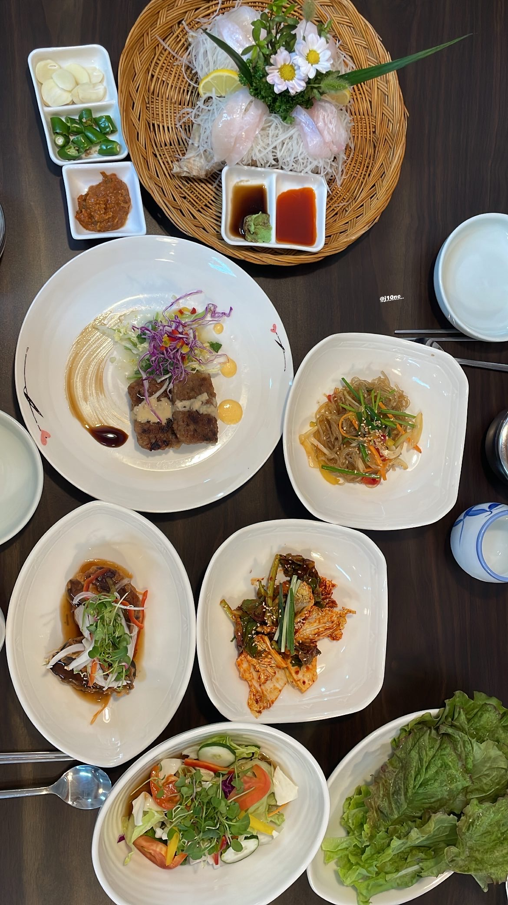

뜨거운 여름밤은 가고 남은 건 볼품없지만
맹~하!두 번째 일상이네요.
시간이 약 2주정도 흘렀습니다.
남은게 볼품없던 뜨거웠던 여름밤을 소개해드리려고 해요.
왜 주제들이 다 우중충하냐고요?
인생이 뭐 그런 것 아니겠습니까~
오늘도 노래하나 틀고 갈게요.
'난 어떤 마음이었길래~ 내 모든걸 주고도 웃을 수 있었나~'
여러분도 그랬던 적이 있나요?
since 2006이니 전 무려 16년동안이나 그랬답니다.
물론 아직도 진행형입니다.
그럼 궁금하지 않을 제 사연을 들려드릴게요.
때는 7월10일 일요일이었어요.
의정부에서 고속버스를 타고 장장 4시간을 가 도착한 곳은 광주광역시였어요.
드럽게 멀어요 진짜...
딱 내렸는데 진짜 너무 덥더라고요...요즘 날씨 미쳤,,
암튼, 내려서 미리 찾아본 '한정식집'을 방문해 맛있게 식사를 했답니다.
 
식사를 마치고 광주기아챔피언스필드를 향해 달려갔습니다.

식사를 마치고 광주기아챔피언스필드를 향해 달려갔습니다.이쯤에서 눈치채신 분들 많으실테지만, 제가 16년동안 모든 것을 주었던 것은 '한화이글스'에요ㅠ
이 날 기아 타이거즈와 한화 이글스가 경기하는 날이었는데,
그래도 광주까지 왔으니 제가 기아팬인 친구를 배려해서 기아 쪽 응원석에 앉기로 했어요.
조금 무섭긴 했지만 기죽지 않고 조용히 응원했습니다 ㅎ
날씨가 정말 더웠던데다가 응원할 때 계속 일어났어야해서 정말 뜨거웠던 여름밤이었어요.
결과는 어떻게 됐냐고요?
늘 그렇듯 말이죠,,
6회까지 3대0으로 이기고 있다가 역전당해서 6대3으로 졌답니다~
자세한 경기결과는 '여기'로 ㄱㄱ씽

아무튼,,또 졌습니다.
제가 살면서 야구장을 10번 언저리 간 것 같은데
이긴 적은 딱 한 번이었요. 딱 한 번.
진짜 너무한 것 같지 않나요?
16년째 탈출못한 제 지능이 떨어지는 것 같기도 하고,,,
여러분은 야구에 관심이 생긴다면 한화이글스는 멀리하시는게 정신건강에 좋습니다 ㅎ
이상 볼품없었던 뜨거운 여름밤 소개였습니다~ 마지막으로 쓸쓸한 제 뒷모습을 보여드리며 인사드릴게요.
명바~~!